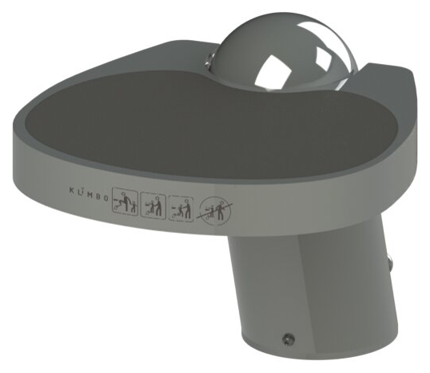

Premium · retráctil
The Klimbo K01
Líneas arquitectónicas y la retracción más suave, para baños de alto tráfico y gran visibilidad.
- Montaje
- Anclado al piso (3 anclajes de mampostería incluidos)
- Material
- Aluminio T6061, pintura en polvo Axalta
- Capacidad de carga
- 815 lb (370 kg), probada en laboratorio
- Garantía
- 5 años, incluido el mecanismo de retracción
- Peso
- 20 lb (9 kg)